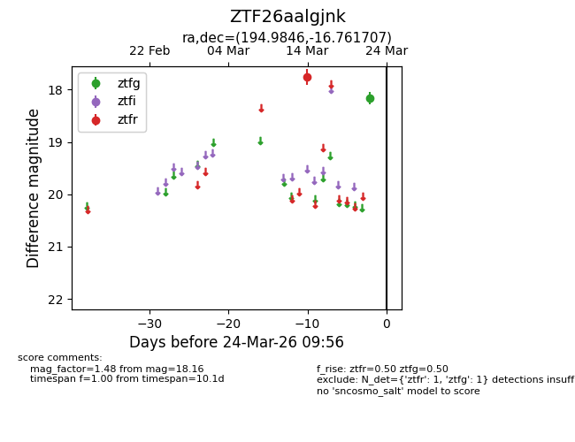
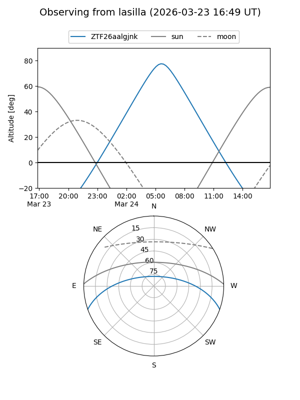
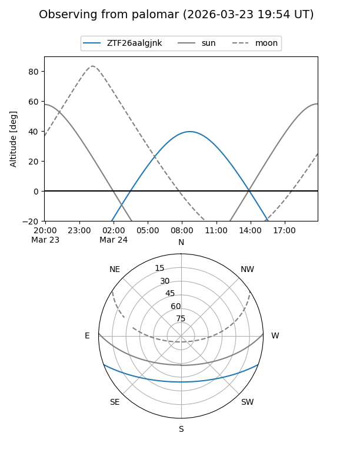

ZTF26aalgjnk
Target ZTF26aalgjnk at 2026-03-24 09:58
Aliases and brokers:
FINK: link
Lasair: link
ALeRCE: link
alt names
ZTF26aalgjnk (ztf,fink_ztf)
Coordinates:
equatorial (ra, dec) = 194.9846,-16.76171
equatorial (HMS+DMS) = 12:59:56.31,-16:45:42.15
galactic (l, b) = (305.8651,+46.06162)
Flags:
Photometry:
last ztfg=18.16, ztfr=17.75
1 ztfg, 1 ztfr detections
Lightcurve

Visibility


Additional plots